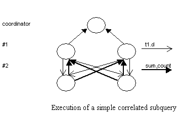

DB2 并行版本中的查询优化
1、 简介
SN, GAMMA, BUBBA,
SM, XPRS
DB2 Parallel Edition(DB2 PE) 运行于 AIX 并行机上，例如 SP2 等。它基于 SN 的体系结构和 Function Shipping 执行模型，提供了可扩展性和大处理能力。基于代价优化，其代价考虑了 CPU 、 IO 和消息传递。保证 ACID 特性，并行化的工具包括：
Load ， Import ， Reorganize Data ， Create Index 。还提供了一个并行数据重组织工具 Redistribute 有效的更正和处理负载不均衡。 Function shipping 指的是在数据存储地点进行相应的数据操作，进行必要的数据过滤，从而减少网络之间传递的数据量。系统设置了服务协调者，负责接受用户输入的 SQL 语句、分发查询执行任务和返回最终结果。除此之外，需要做的工作有：
生成并行查询执行计划、数据和控制流、进程管理、并行事务和封锁管理、并行工具。
支持 HASH 数据分片，扩展了 DDL ：
CREATE NODEGROUP GROUP_1 ON ONODES(1 TO 32,40,45,48);
CREATE TABLE PARTS(Partkey integer, Partno integer) IN GROUP_1
PARTITIONING KEY(Partkey) USING HASHING;
CREATE TABLE PARTSUPP(Partkey integer, Suppkey integer) IN GROUP_1
PARTITIONING KEY(Partkey) USING HASHING;
HASH 函数是系统内置的。不同表在分片列上属性值相同的元组被划分到同一个结
点。这样的表称为 collocated 。于是在这些表上的等值连接称为 collocated joins 。例如 PARTSx (Partkey=Partkey) PARTSUPP 。
2 、查询优化
(1) 代价优化――考虑了操作的固有并行性和消息通讯的代价；
(2) 综合利用数据分布信息――利用基表和中间结果表的数据分布和分片信息；
(3) 透明的并行性――几乎不需要从重写查询。
2.1 扩展的操作符
系统可以利用串行版本的基本操作，例如 Scan 等，但是还需要扩展：
(1) 用于控制多个子任务协同执行的操作――协调者；
(2) 进程间通讯操作 send/receive ， send 可以是广播或者单播， receive 可以是 merge 多个有序的输入，也可以是 FIFO 。
2.2 分片方法
DB2 的分片方法可以看作一个有效的负载均衡工具。优化器充分利用分片和结点组的信息，优化查询，例如 collocated joins 。
2.3 查询优化和查询计划生成
查询优化器所做的主要工作有： 1) 选择优化的连接次序， 2) 确定基本表的存取方法和连接方式， 3) 决定操作的执行结点，例如数据的重新分片， 4) 计算查询执行代价要考虑系统资源消耗和响应时间。 DB2 PE 采用了简化的规则：
1) 在自底向上产生查询执行计划的时候，累计每个结点所占用的系统资源，其中的最大值作为系统响应时间。忽略了协调者的执行代价，以及多进程干扰的复杂性；
2) 在所有可能执行连接的节点子集中决定执行结点时，只考虑其中的一部分结点，例如内表分片所在的结点，外表分片所在的结点，以及其他的一些结点（没有具体的说明）。由此简化了计划生成的搜索空间，保持在串行搜索空间的线性比例上。
连接操作的执行方法包括： collocated, directed, broadcast, repartitioned 。 directed join 指的是连接在一个输入关系所在的节点进行，而把另外一个关系的元组发送到适当的节点（例如在一个输入关系的分片属性上做等值连接）。 repartitioned join 指的是重新分布输入的连个关系，例如做等值连接时。 broadcat join 指的是在连接之前把其中一个关系的元组广播到另一个关系所在的节点组，这可以对应于任意类型的连接。
基于代价的优化――两阶段优化不再适合。数据分片和放置对查询计划的选择有很大的影响。
2.4 所有操作的并行化
1、 聚集操作――在各个子任务执行聚集函数，必要时在全局执行最后的处理。对 Group By 子局来说，重新分片可能比直接采用输入数据具有更好的并行性。
2、 集合操作――采用 collocated, repartitioned 策略。注意 UNION 可以是一个 N 元操作。
3、 带有子查询的 Insert 语句， Update 和 Delete 语句―― Insert 语句和子查询可能是 collocated 。或者采用 directing 方式。 Update 和 Delete 总是和相应的查询 collocated （ Update 如果发生在分片属性上，还需要考虑重新分片受到影响的元组）。
4、 外连接――主要的策略与普通的连接一致，但是要避免产生多个由于没有匹配元组而产生的结果元组。
5、 子查询――把子查询的结果发送到计算包含子查询的谓词的节点采用 collocated, directed, broadcast 方法。
3. 子查询的处理
嵌套查询的例子：
select *
from t1
where t1.a in (select b
from t2
where t2.c = t1.a and t2.d in (select b
from t3
where t3.a = 10
));
最里面的子查询只需要执行一次即可。但是下面的查询则不然：
select *
from t1
where t1.a in ( select b
from t2
where t2.c = t1.a and t2.d in ( select b
from t3
where t3.a = t1.f
));
子查询处理需要注意的问题包括：
(1) 避免为每个外查询产生的元组启动一个子查询，这样的代价太大了；
(2) 保证产生外查询元组的不同节点不会因为子查询的执行而串行化；
(3) 保证正确的外查询节点得到执行的结果；
(4) 尽量下移谓词，从而减少数据的传输。
我们用一个简单的一层相关查询来看看 DB2 是如何处理嵌套查询的：
select *
from t1
where t1.a > ( select avg(t2.b)
from t2
where t2.c = t1.d
);
